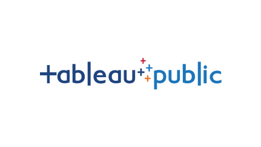

Data Cleaning in SQL
In this project I cleaned the data in order to effectively analyze it and faciliate the housing data in SQL server.
After years working in retail and logistics , I pivoted to data analytics to solve the operational bottlenecks I used to experience firsthand. I combine domain knowledge with technical analytics to build reliabe insights.
In this project I cleaned the data in order to effectively analyze it and faciliate the housing data in SQL server.
Data Exploration with COVID 19 dataset with SQL server.

All of the data analysis I found and used Tableau to effectively display meaningful insight of the data I used to broadcast to an audience.
I collected datasets from the Los Angeles Homeless Services and LAUSD to find the proximate distance homeless shelters are with relations of the schools in Los Angeles County

I used a movie dataset to clean and transform the data. Then explored the possible correlation to see all the possible variables with the strongest relationship
Los Angeles, CA